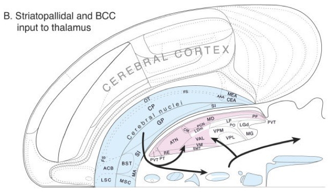
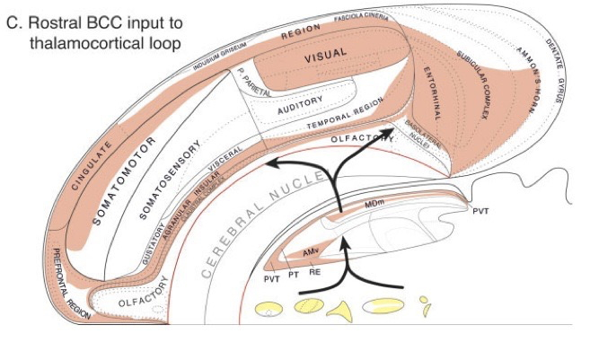

- Cognition
2018-10-26 12:34:34
Today's Topics
The emergence of behavior
Cambrian Explosion
What sparked the explosion? (Fox, 2016)
- Behavior requires energy
- Behavior requires perception at a distance
- Behavior requires action
- Actions require
- Problem solving, (sequence) planning
- Current + stored information (memory)
What behaviors are essential for animals to perform?
- Ingestion
- Defense
- Reproduction
What behaviors are essential for animals to perform
- Perception at a distance
- Locomotion
- Object manipulation/consumption
- Signaling/communication
How is the nervous system organized to contribute to these behaviors?

Cajal

Swanson/Cajal four systems

Hierarchy of control

Functional segregation

Do what, where, how?

Facets of cognition
- Perception
- Attention
- Imagery
Facets of cognition
- Learning and conditioning
- Memory
- Episodic (events)
- Semantic (facts, things, entities)
- Procedural (actions)
- Language
- Problem-solving
Cognition and the cerebral cortex

Cortical schema
- Areas
- Unimodal sensory
- Polymodal association
- Motor
- Connections
- Association
- Commissural
Cortical areas (Swanson, 2012)

Cortical schema
- Columnar structure
- Cytoarchitectonic differerences (e.g. Brodmann)
Cortical columns

Cortical layers

Cortical connections by layer
| Layer | Connection type | Comments |
|---|---|---|
| I | Few cell bodies | |
| II | Efferent | Ipsilateral association via large pyramidal cells |
| III | Efferent | Contralateral commissural |
| IV | Afferent | from thalamus; small stellate & granual cells; V1 has sublayers |
| V | Efferent | Superficial -> Basal ganglia; Deep -> brainstem, spinal cord; pyramidal cells |
| VI | Efferent | Thalamus |
Cortical circuit schematic

Behavioral control column

Behavioral control column

Behavioral control column

Behavioral control column

Behavioral control column

Processing networks
"Although it has long been assumed that cognitive functions are attributable to the isolated operations of single brain areas, we demonstrate that the weight of evidence has now shifted in support of the view that cognition results from the dynamic interactions of distributed brain areas operating in large-scale networks…."
(Bressler & Menon, 2010)

(Bressler & Menon, 2010)

(Bressler & Menon, 2010)

(Bressler & Menon, 2010)

Summary
- Cognition
- Do what, where, when, and how
- The "cognitive" cortex
- Processing networks
- Functional specialization
- Dynamic interaction
Language and the brain
Language behavior
Language behavior
- Productive
- Speaking (2-5 words/s), modulate prosody, often combined with gesture
- Writing, typing (.5-1.5 words/s)
- Receptive
- Listening, responding (facial expressions, gestures, laughter, etc.)
- Reading (3-5 words/s)
- How so fast? Time for feedback?
Hierarchical structure of language information
- Phonetic
- |Ber| |wiTH| |mē|
- Syntactic
- Semantic


Hierarchical structure of language information
- Pragmatic
- "I beg your pardon?!"
- "Sure thing."
- "Aaaaaa!!!"
Wernicke-Geschwind (WG) model
- Perception ≠ production

Wernicke-Geschwind model
- Wernicke's area (Brodmann Area or BA 42)
- Adjacent to primary auditory cortex (A1; Heschl's gyrus; BA 41)
- Perception
- Receptive or 'fluent' aphasia


Wernicke-Geschwind model
- Broca's area
- Inferior frontal gyrus, pars opercularis (BA 44) & pars angularis (BA 45)
- Production
- Expressive aphasia
- Inferior frontal gyrus, pars opercularis (BA 44) & pars angularis (BA 45)

(Hickok & Poeppel, 2007)
- Dual streams
- Ventral (speech signals -> semantics)
- Dorsal (speech signal acoustics -> articulatory networks in frontal lobe)

(Hagoort & Indefrey, 2014)


"A meta-analysis of numerous neuroimaging studies reveals a clear dorsal/ventral gradient in both left inferior frontal cortex and left posterior temporal cortex, with dorsal foci for syntactic processing and ventral foci for semantic processing. In addition…further networks need to be recruited to realize language-driven communication to its full extent."
Summing up
- WG model incomplete, simplistic
- Rapid, fluent comprehension and production of language relies on
- Distributed temporal/frontal networks
- Efficient bottom-up and top-down processing
- Syntactic vs. semantic/articulatory processing

{kind=link}
Next time…
- Learning and memory
- Distributed systems
- Associative learning, NMDA receptors, and the hippocampus
References
Bressler, S. L., & Menon, V. (2010). Large-scale brain networks in cognition: Emerging methods and principles. Trends in Cognitive Sciences, 14(6), 277–290. https://doi.org/10.1016/j.tics.2010.04.004
Fox, D. (2016). What sparked the Cambrian explosion? Nature, 530(7590), 268–270. https://doi.org/10.1038/530268a
Hagoort, P., & Indefrey, P. (2014). The neurobiology of language beyond single words. Annu. Rev. Neurosci., 37, 347–362. https://doi.org/10.1146/annurev-neuro-071013-013847
Hickok, G., & Poeppel, D. (2007). The cortical organization of speech processing. Nat. Rev. Neurosci., 8(5), 393–402. https://doi.org/10.1038/nrn2113
Swanson, L. W. (2005). Anatomy of the soul as reflected in the cerebral hemispheres: Neural circuits underlying voluntary control of basic motivated behaviors. Journal of Comparative Neurology, 493(1), 122–131. https://doi.org/10.1002/cne.20733
Swanson, L. W. (2012). Brain architecture: Understanding the basic plan. Oxford University Press.